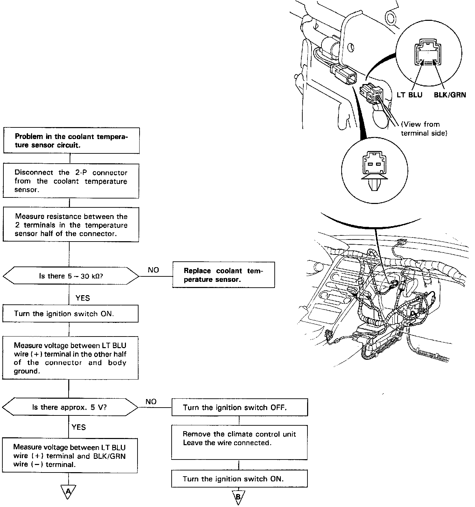
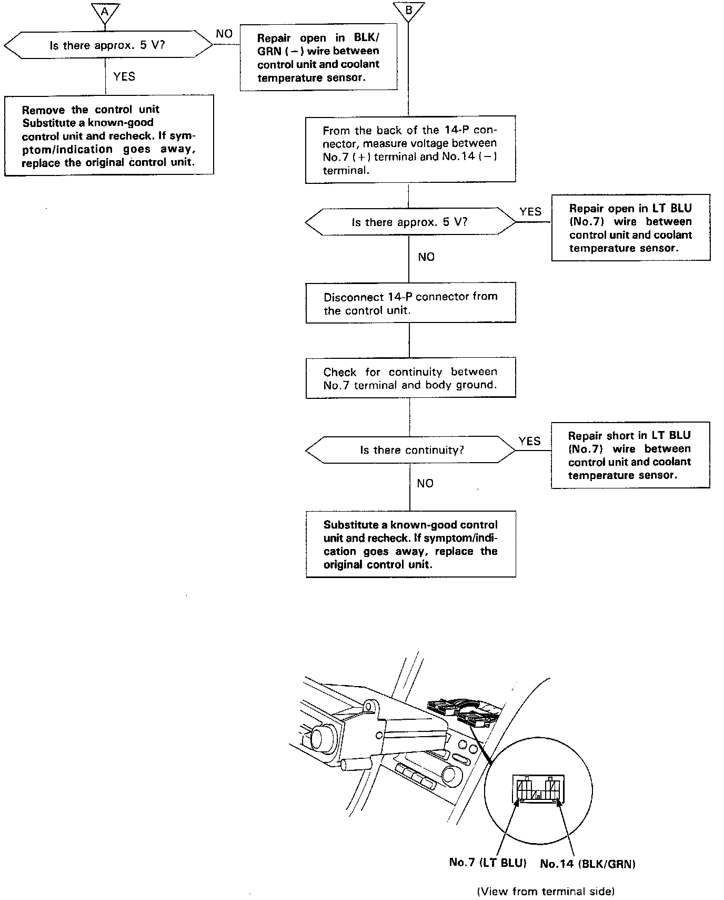

Coolant Temperature Sensor / Switch HVAC: Testing and Inspection
Coolant Temperature SensorSelf-diagnosis indicator light D comes on: Indicates a problem in the coolant temperature sensor circuit. Use a digital multimeter IKSAHM-32-003) to check it.
The coolant temperature sensor is a temperature dependent resistor (thermistor). The resistance of the thermistor decreases as the coolant temperature increases.
Part A:

Part B:
